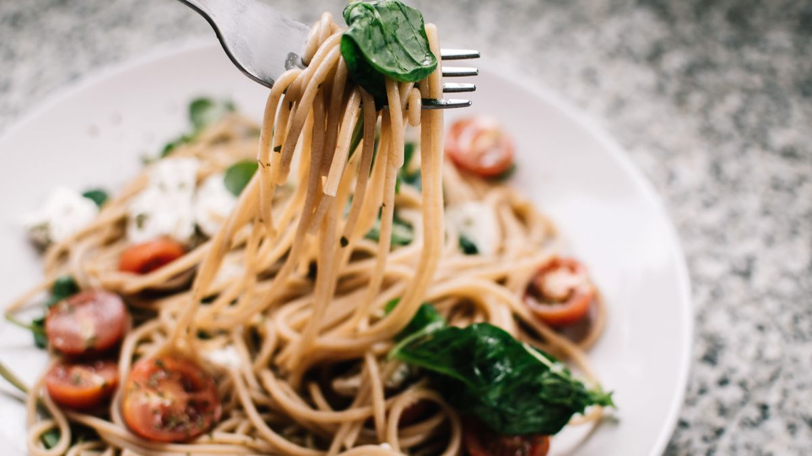
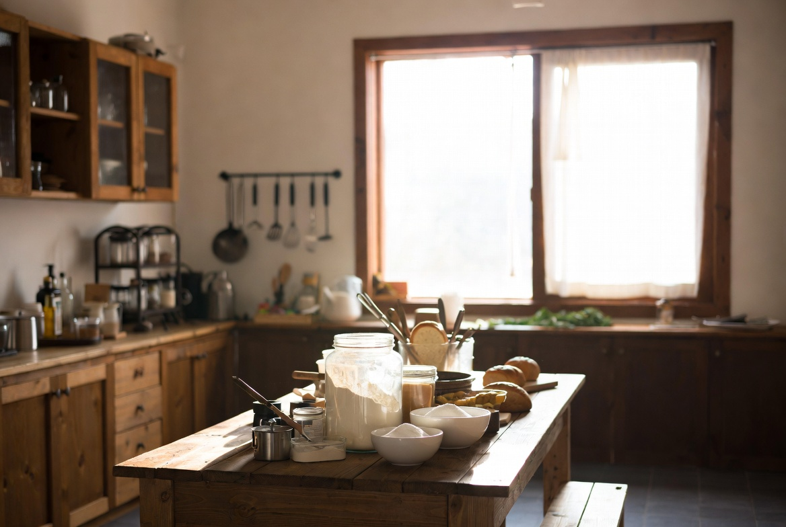

이 정리 글의 목적
2025년 6월 1차부터 8월 5차까지, 밤식빵 프로젝트를 다섯 번의 실험으로 한 사이클 돌렸습니다. 이 글은 새 실험이 아니라 1~5차를 나란히 놓고 읽는 중간 정리입니다.
출발점은 어릴 적 동네 빵집의 한 조각이었고, 방법은 기능사 합격 뒤 R&D 일지로 이어졌습니다. 각 차수에서 변수는 하나씩만 바꿨고, 이 글에서는 그 결과를 표처럼 묶어 봅니다.
완성 발표가 아닙니다. 6차 이전에 '지금 어디까지 왔는지'를 글로 남기려고 썼습니다.
실험은 2025년 6월~8월, 발행은 2026년 6월입니다. 여름 기록을 겨울에 그대로 쓰면 어긋날 수 있어, 중간 정리에도 계절 메모를 남깁니다.
1~5차 공통으로 남은 것
- 기억 속 단맛·바삭함 균형 — 5차에서 밀착은 최고였지만 단맛이 약간 올라 '그때'보다 달게 느껴짐
- 완전한 덩어리감 — 한 입 전체가 빵과 밤이 한몸처럼 느껴지는 순간은 늘었으나 매번은 아님
- 재현성 — 여름 습도·실내 온도에 따라 발효·식감이 흔들림. 겨울 재현은 아직 안 함
반면 분명히 나아진 것도 있습니다. 토핑 흘러내림(1→2→5차), 다음 날 촉촉함(1→3→4차), 밤 밀착(1→2→5차). 실패만 적으면 다음 변수를 고르기 어렵습니다. 나아진 것도 같은 기준으로 적습니다.
1차에서 가족이 '맛있는 식빵'이라고 했을 때와 5차에서 '가장 비슷하다'고 했을 때의 차이도 기록에 남습니다. 가족 말만으로 완성을 판단하지 않지만, 같은 가족의 표현 변화는 참고합니다.
여름 두 달 동안 같은 팬·같은 오븐을 썼는데도, 습도 높은 날과 비 온 뒤 날의 발효 결과가 달랐습니다. 재현성 문제는 레시피만의 문제가 아니라는 걸 중간 정리를 쓰면서 다시 느꼈습니다.
차수별로 확인된 것
1차(시럽 농도): 흘러내림·밀착·다음 날 건조 문제를 처음 목록화. 토핑 시점·수분 가설 출발
2차(토핑 시점): 1차 발효 후 올리면 밀착 부분 개선. 시럽 농도는 1차와 동일 유지
3차(수분 +2%p): 당일 차이 작음, 다음 날 촉촉함 소폭 개선. 시험 반죽보다 물이 조금 더 필요할 수 있음
4차(보관): 실온 개방보다 루즈 백이 다음 날 속 촉촉함에 유리. 껍질 눅눅함은 트레이드오프
5차(시럽 졸임 +2분): 2·3·4차 조건 고정 위에서 밀착·흘러내림 최고. 단맛 상승
각 편의 상세는 해당 일지에 있습니다. 읽기 순서 안내를 참고하세요.
지금까지의 '고정값' 초안
중간 시점에서 6차까지 기본으로 둘 조합 초안입니다. 확정 레시피가 아닙니다.

- 반죽: 기능사 식빵 기준 수분 +2%p (3차)
- 토핑 시점: 1차 발효 후, 성형 직전 (2차)
- 시럽: 설탕:물 2:1, 1·2차보다 졸임 +2분 (5차)
- 보관: 식힌 뒤 루즈 백 실온 12시간 내외 (4차)
- 굽기: 집 오븐 상화 200°C·하화 190°C, 32분 (1차부터 유지)
이 목록은 '이제 끝'이 아니라 6차에서 무엇을 바꿀지 정하기 위한 베이스입니다.
고정값이라고 해서 영원히 바꾸지 않는다는 뜻은 아닙니다. 6차에서 단맛을 맞추면 시럽 줄이 항목이 먼저 흔들릴 수 있습니다.
6차 이후 후보
- 졸임 시간 유지 + 설탕 총량 소폭 감소 (5차 단맛 보정)
- 가을 신선 밤 vs 통조림 비교 — 재료 변수
- 굽기 후 시럽 브러싱·토핑 압착 등 미검토 구간
- 겨울 실내 온도에서 1~5차 고정값 재현
우선순위는 단맛 보정과 재현성입니다. 가족이 '가장 비슷하다'고 한 5차를 겨울에 다시 굽어 보는 것도 포함됩니다.

6차는 설탕 보정으로 이어졌고, 7·8차에서 재료·브러싱까지 발행했습니다. 이후 변수는 읽기 안내의 후보 목록을 참고하세요.
기억과의 거리 — 솔직히
5차가 1~4차 중 가장 가까웠습니다. 그래도 제 기억 속 그 빵집과 완전히 겹치지는 않았습니다. 겉 색·높이·밤 알맹이 크기 같은 보이지 않는 차이가 남아 있습니다. R&D 일지는 그 간격을 숨기지 않습니다.
기능사 시험 반죽에서 출발한 것이 한계이기도 합니다. 시험용은 규격과 시간이 목적이었고, 기억 속 빵은 그 규격 밖에 있을 수 있습니다. 중간 정리를 쓰면서 '반죽 자체를 더 열어야 하나'라는 질문도 메모에 남겼습니다.
가족이 5차에서 '가장 비슷하다'고 했을 때도, 제 기억과 완전히 겹치지는 않았습니다. 그 간격을 숨기지 않는 것이 이 프로젝트의 기록 방식입니다.
5차를 '가장 가까웠다'고 적었지만, 그날 밤 제가 먹었을 때는 여전히 '그때'가 아니었습니다. 가족 말과 제 기억이 어긋날 때는 가족 말을 참고하되, 최종 판단은 제 기억 쪽에 둡니다.
R&D 일지를 읽는 분께
1~5차를 따라 해 보셨거나, 비슷한 추억의 빵이 있으시면 어느 차수의 변수가 가장 와닿았는지 문의로 알려 주세요. 지역·시대·빵집마다 기억이 다릅니다.
처음이시면 읽기 순서 안내 후 각 차수 일지를 보시고, 이 정리 글을 마지막에 읽으시면 흐름이 맞습니다.
실전 적용 노트
중간 정리를 직접 할 때 쓰는 표 형식: 차수 / 바꾼 변수 / 나아진 점 / 남은 점 / 다음 날 식감. 1~5차를 이 다섯 칸으로 채우니 6차 변수가 보였습니다.
사진은 같은 각도(전체·단면·다음 날)로 모아 두었습니다. 글만 읽을 때보다 나란히 보면 수분·보관 차이가 더 분명합니다. 실험일은 2025년 6~8월, 발행은 2026년 6월입니다.
중간 정리를 쓸 때 도움이 된 질문 세 가지: 이번 사이클에서 바꾼 변수는 무엇이었나, 반쯤 맞았다은 어디까지인가, 다음에 건드리지 말아야 할 고정값은 무엇인가. 1~5차 답을 표로 묶으니 6차 후보가 보였습니다.
읽기 순서 안내와 이 중간 정리는 짝입니다. 안내는 앞으로 읽을 때, 정리는 다 읽은 뒤 돌아볼 때 쓰도록 나눠 두었습니다.
완성 레시피가 아니라 진행 중 기록임을 다시 적어 둡니다. 6차가 올라오기 전까지는 5차 고정값이 '가장 가까웠던 조합'입니다.
정리하며
밤식빵 프로젝트 1~5차를 돌아보니, 토핑 시점·수분·보관·시럽이 각각 한 조각씩 맞춰졌습니다. 가장 가까웠던 5차도 아직 기억과는 간격이 있고, 단맛·재현성·계절이 다음 과제입니다. 6차 이후 6~8차 일지가 이어졌습니다. 한 조각에서 시작한 이야기를 끝까지 읽어 주셔서 감사합니다. 다른 기억의 밤식빵 이야기도 문의로 나눠 주세요.
초보자가 자주 실수하는 포인트
- 5차만 보고 프로젝트가 끝났다고 생각하기
- 차수별 부분 성공을 전체 완성으로 착각하기
- 고정값 초안을 확정 레시피로 오해하기
- 여름 실험 결과를 겨울에 그대로 적용하기
체크리스트
- 1~5차 바꾼 변수 한 줄씩 적기
- 나아진 점·남은 점 나란히 쓰기
- 고정값 초안과 확정 레시피 구분
- 6차 후보 우선순위 정하기
자주 묻는 질문
- 지금 만들면 5차와 비슷한가요?
- 5차 고정값 초안을 쓰면 가장 가깝습니다. 다만 여름에 기록한 발효·보관은 계절에 따라 달라질 수 있어, 겨울 재현 전까지는 '가장 가까웠던 조합'으로 보는 편이 맞습니다.
- 6차는 언제 올라오나요?
- 단맛 보정·재현성 실험 후 같은 일지 형식으로 올릴 예정입니다. 확정 일정은 없고, 결과가 모이는 대로 발행합니다.
이 글은 운영자의 직접 경험을 바탕으로 작성되었으며, 오븐·재료·환경에 따라 결과는 달라질 수 있습니다. 식품 위생·알레르기 등 건강 관련 판단을 대체하지 않습니다.